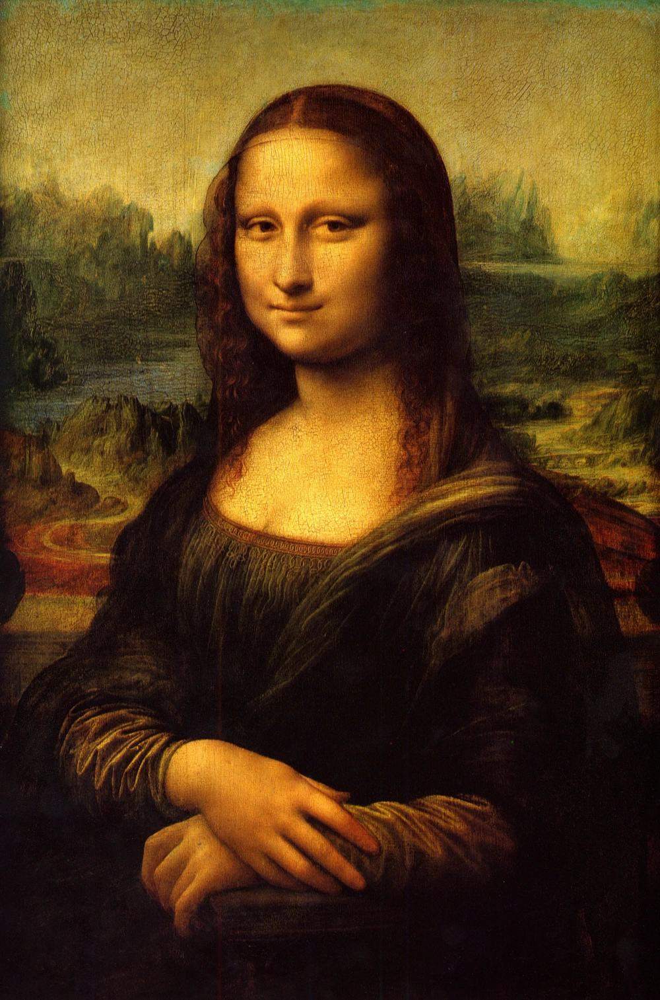

油画发展史
-
1)西方油画的发展史
油画的发展过程经历了古典、近代、现代几个时期，不同时期的油画受着时代的艺术思想支配和技法的制约，呈现出不同的面貌。油画发展初期的历史条件奠定了古典油画的写实倾向。15世纪的欧洲文艺复兴运动中，人文主义思想出于 对宗教的批判,有着关注社会现实的积极要求,许多著名 画家为逐渐摆脱单一的以基督教经典为题材的创作，开始对当时生活中的人物、风景、物品进行观察和直接描绘，使宗教题材的作品含带明显的现实世俗因素，有的 画家完全描绘现实生活的实景。文艺复兴时代的画家继 承了希腊、罗马的艺术观念，即不仅注重作品要描述某一事件或事实，还要揭示出事件或事实的前因后果，于是形成了注重构思典型情节和塑造典型形象的艺术手法。 与此同时，画家还分别探索解剖学、透视学在绘画中的运用、画面明暗分布的作用等，形成了造型的科学原理。 人体解剖学的运用使绘画中的人物造型有了如同真实般 准确的比例、形体、结构关系；焦点透视法的建立使绘 画通过构图形成幻觉的深度空间，画中的景物与现实中 定向的瞬间视觉感受相同；明暗法使画中的物象统一在 一个主要光源发出的光线下，形成由近及远的清晰层次。 人文主义的艺术主题与追求写实的造型观念在其他画种中所以不能完善，是因为工具材料的限制，而油画工具 材料性能正适于将二者充分体现出来。因而，古典油画 成为经长期制作的、高度写实的面貌。
17世纪是欧洲古典油画迅速发展的时期，不同地区、 国家的画家依据自己生活的社会背景、民族气质，在油 画语言上进行了不同的深向探索，油画的种类按题材划 分为历史画、宗教故事画、团体肖像、个人肖像、风景 画、静物画、风俗画等。油画技法也日臻丰富，并形成 了各国、各地区的学派。 -
2)中国的油画
中国的油画最早出现在棺椁器具之中，据周礼、汉书等文献所记，二千多年前的中国已有用“油”绘画的历史。 通常的说法是1581年利玛窦携天主、圣母像到中国后，才开始了中国的油画，其中一幅“木美人”作品，虽历时五百年,仍依稀可见画风的古朴厚重。清末维新变法后，许多青年学子先后赴英、法、日本等国学习西洋油画。1964年，在“一切以阶级斗争为纲”的口号下林彪、江青等对文艺界进行了一场文化扫荡。不少画家的作品被洗掠一空，钟涵的《延河边上》、杜键的《在激流中前进》、李化吉的《文成公主》、秦征的《家》等都以莫须有的罪名示众批判，并被破坏殆尽。虽然文化的禁锢已经解除，但由于各种原因（主要是经济上的原因），大部分画家的眼界与思维尚未完全打开，以领略当今世界各种纷繁复杂的变化，因而缺乏真正的具代表性的作品。 但毕竟，中国的油画此时已进入一个新的时代，正在学习、蜕变，并不断地丰富。